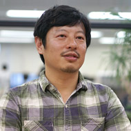
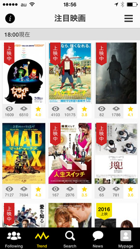

開発事例インタビュー
日本最大級の映画レビューサイトを運営するつみきが、オフショア開発を選んだ理由とは？
2012年にスタートして以来、3年で800万以上ものレビューが書かれている日本最大級の映画レビューサイト「フィルマークス」。運営するのは、ウェブとアプリの制作会社として数多くの制作実績と知見を持つ株式会社つみき。フランジアでは、フィルマークスの開発を6名のラボチームでお手伝いさせていただいております。今回のオフショア開発についてお話を伺いました。

鈴木 貴幸氏
つみき代表取締役社長
「こころをうごかす」を企業理念にフィルマークスで映画ファンと業界のこころを動かしたいと活動中
土屋 匠氏
つみきサーバサイドエンジニア
RubyOnRailsで多くのサイト構築を手掛けてきた実績を活かし、今回のフィルマークスのリプレースのメイン担当として活躍
佐野 達也氏
つみきサーバサイドエンジニア
主にフィルマークスのインフラ運用・構築を担当。AWS構成とDBチューニングで最適なパフォーマンスを引き出す
受託開発から自社事業へ
フィルマークスについて教えていただけますか。
鈴木：会社を起こして8年目になります。創業当初はウェブの受託開発をやっていて、ウェブの広告キャンペーン制作が仕事の大半でした。そもそも「自分で事業つくりたい」という思いがあって始めたんですけど、なかなか踏み込めない時期があって、4～5年目ぐらいからちょっとずつ自社事業をやれる体制ができてきました。そこで、フィルマークスをつくろうっていうことになって、2012年8月にフィルマークスをスタートしました。
TSUTAYAのお店に行った時に、棚にたくさんの映画が並んでいる中から、自分が観たいものが見つけられない事がありました。スマホを持っていて、でも何のアプリやサービスを開けば観るべき映画を見つけられるだろうと思った時に、そんなサービスが無いのかもしれないと思ったのがキッカケです。日常的にFacebookやTwitterで週末に観た映画の投稿や、ランチしながら映画の話をすることがよくあって、映画だけのSNSがあれば、友だちのオススメ映画を参考に観てみようってことも出来るなと思いました。
誰がどれくらい使ってくれるかも全然わからなかったですが、自分たちが本当に便利で使い続けられるものを作り続けようという思いだけでスタートしました。

自社ビジネスに割いているリソースはどれくらいでしょうか？
鈴木：兼任している人が多いのですが、全体でいうと7：3ぐらいで、今はフィルマークスが中心になっていますね。
「いい映画との出会い」を広げたい
フィルマークスの特徴などを具体的に教えもらえますか？
鈴木：「いい映画と出会おう」をコンセプトで、6万4000タイトルある中からその人がおもしろいと思える映画を見つけやすくする、文字どおり「いい映画との出会い」を広げていくサービスです。特に外出先で便利に使える事を目指しました。レンタルショップで、観たい映画を探しやすかったり、映画館を出たすぐ後で、手軽にレビューが書けたり、日常で映画と触れる利用シーンから設計しています。サービス開始からまもなく3年になりますが、レビュー数は800万件を超えて良質な映画レビューを参考にいい映画を見つけやすくなったと思っています。
「いい映画との出会い」を広げていきたいと語る鈴木氏
企業とのキャンペーンなどは行っていますか？
鈴木：フィルマークスには熱量の高いユーザーがたくさん集まっています。映画上映前に、試写会を行って、映画の見所をユーザーのレビューとして紹介して、オンライン上の口コミを広げるキャンペーンを中心に行っています。最近では、上映後のDVD販売時にもキャンペーンを行う機会が増えてきました。
コアユーザーの方々はどのように使われているのでしょうか？
鈴木：20代前半女性のボリュームが一番多くて、「プラダを着た悪魔」や「レ・ミゼラブル」など比較的過去の作品にも未だにたくさんのレビューが書かれ続けています。また「トレンド」という直近のよく見られているタイトルをみると、今後上映する気になる映画を「クリップ」して、上映日にPUSH通知を受け取り、上映すぐに映画を観に行く方も多いんじゃないかと思います。
各映画の賞ごとにいろいろ検索できるようになっているので、何を選んでいいかわからない人たちにとってはすごくいいサービスですよね。
鈴木：マニアックな賞も結構あったんですよね（笑）。 サービスを始めたときから、なぜかあそこをすごく頑張って人力でいろいろ検索して入れていましたね。とにかく色んな切り口で新作も旧作もいい映画と出会えるようにと思っています。

最新の人気が並ぶトレンドページ
好きな映画に関連したプッシュ通知機能
フィルマークスのこだわりの機能はなんでしょうか？
鈴木：好きなキャストや監督の新作が登録されたらプッシュ通知されるのですが、これから上映する映画をクリップしていると上映日にプッシュされる機能ですね。こだわりというか良い機能だなと思っています。例えばファンの多いアン・ハサウェイの新作が登録されると一日でクリップが500とかついて、上映するのは2年後なのに見たいという人がすでに500人いる状況になるんです。
今までのデータって過去の行動履歴に基づくものが多かったと思いますが、未来予測をしていくのはすごく面白いテーマだと思っています。
ほかにもこの仕組みを応用してやりたいとはありますか？
鈴木：今は見る前に「見たい映画を見つける、探せる」、そして見た後は「感想を書く」はできているので、次は中間の「見る」をもっと拡げていきたいと思っています。
「見たい」から一歩進んだところに映画スケジュールがあって劇場がさらに近くなる。同様にレンタルと連携して新作のレンタルがすぐにわかるようになったり、過去の作品を見やすくしたりとか。
あとは、フィルマークスの中でみたい作品があったらすぐ見られるように映像配信をするとか。映画のことを想像したらまずフィルマークスを開こう。そう思ってもらえるサービスを目指したいですね。

公開前にもかかわらず多くのファンがクリップしている
オフショア開発についてですが、日本とベトナムではどのような体制で行われているのでしょうか？
土屋：日本側は私1名でPMを行って、フランジア側ではBSE1名プログラマー3名QA1名でPMのサポート1名の合計7名でラボ開発をスタートしました。システムのリプレイスが主な開発の目的だったので、中盤あたりでPMサポートのアサインを解除して合計6名で後半の開発を進めていきました。
フランジア側のつみきチームのメンバー
過去にオフショア開発をご経験なさったことは？
土屋：今回が初めての経験です。
仕様書が存在しない状態でPHPからRubyに移行
オフショア開発をしようと思った理由を教えてください。
土屋：フィルマークスのサーバーサイドのリプレイスがサービスの成長に不可欠だと考えていました。ただ、社内のサーバーサイドのエンジニアが佐野と私の二人だけだったので、外部に依頼することも考えたのですが、仕様書が存在していなかったんです。なおかつPHPからRubyに置き換えるという点で、二つの言語を扱えることもネックとなっていました。そういう状況下でたまたまフランジアさんに相談したところ、こちらの要望に対して柔軟に対応可能という印象を受けたのと、「親身に手厚くサポートしてくれそうだな」って心強く感じたのでオフショア開発しようと思いました。
PHPとRubyの両方できる会社が見当たらなかった
国内で開発先を探すということはされましたか？
土屋：国内だったら開発をまるまるお願いできる会社かな、と思って探していたのですが、やはり仕様書がないのが大きくて、PHPからRubyというので「こっちは強いけどこっちは弱いよ」とか「できる人いないよ」とか、なかなかこの条件に合うところが見当たらなかったんです。
フランジアに連絡をいただいたきっかけは？
土屋：私がウェブで、“Rubyが強くてオフショア開発をしているところ”で探した結果、フランジアさんがよさそうだというのがきっかけです。
初めてのオフショアで不安に思ったことはなんでしょうか？
土屋：やっぱり言葉や文化がまったく違うので、開発中にそのあたりが問題になるのではないか、というのをすごく懸念していました。
言葉の問題や文化の部分は実際いかがでしたでしょうか？
土屋：言葉のニュアンスの違いが開発中にあって、ちょっとした認識ミスや齟齬が発生したんです。そういう時にきちんとチャットなどでコミュニケーションをとったことで、問題なく開発を進めることができました。
ブリッジSEが日本語で対応、コードレビューは簡単な英語でやりとり
日本語でやりとりをされていたのでしょうか？
土屋：ブリッジのSEの方が日本語を話せたので、日本語で応対していただきました。ただ開発の各メンバーとは基本的にコミュニケーションが私とは発生しない状況だったんですね。なので、コードレビューのときにコメントのやりとりの際に、中学生レベルの英単語とかを使ってやりとりをしてチームとしての一体感を保つように努力しました。
開発ではどんなことを重視されていましたか？
土屋：まず1点目がアプリケーションの細かい仕様の伝え漏れや齟齬などが起きないようにすることです。2点目は、上がってきたプロダクトに対して品質がきちんと担保できているかというところですね
品質のほうはいかがでしたでしょうか？
土屋：品質は特に致命的な不具合は存在しなかったので問題なかったですね。
2ヶ月ほどコードの書き方を丁寧に指摘
やりとりで工夫をされたことはなんでしょうか？
土屋：立ち上げ時期の頃は、コードの書き方やテストケース、テストコードの書き方などの指摘をしました。私もコードを書いてきた人間なので、日本語で伝わらない時はプログラムを書いて、「こっちがダメなコード。こっちがいいコード」などの指摘を全部コードに落として伝えました。
それでやっぱり2ヵ月ほどやっていくともうすぐに吸収してくれるので1、2回言うと3回目には自然になってくるので、そのあたりについてはすごく助かりました。本当に吸収力があるというか応用力があるというか、すごく機転がきいて素早い対応をしてくれたなって思いました。
若い人が多くて活気がある
ベトナムには行かれましたか？
土屋：8月後半ぐらいに、私と佐野と代表の鈴木で訪問させていただきました。
ベトナムはいかがでしたか？
佐野：ベトナムはみんな初めてで、空港降りてタクシーの値段もわからなくて、あとで聞いたら「ちょっとそれは高いね」って言われました（笑）。
最初は道の渡り方すらわからず、「どうやって渡るんだろう、これ？」みたいな感じでしたね。
土屋：横断歩道もないから引かれそうになるんじゃないかって（笑）。
佐野：ベトナムは日本に比べて遅れている中で、フランジアさんという進んだ企業が大きいビルに入ってやっていることにITのすごさを感じました。
土屋：オフィスに行かせていただいて思ったのは、若い人が多くて活気があるなというところですね。日本の企業と比較したら勢いが全然違うというか、こっちもその気にさせられちゃう（笑）。
フランジアのオフィスがあるカンナムハノイランドマーク タワー
齟齬がないようにSkypeで顔を見ながらチャット
ここは苦労した、ということはありましたか？
土屋：開発で言うと、週に1回SkypeでBSEのTungさんと定例ミーティングをしていたのですが、日本語がネイティブではないので聞き取れない。もしくは私が何か伝えたときに聞き取れているかというのがわかりづらいときがあったので、そういうときはSkypeで顔を見ながらチャットでその場をしのいだということが多々ありましたね。
Skypeで顔を見ながらミーティング
佐野：文章のほうでやりとりしているときは、日本人とやりとりしているように思うぐらい不自由はなかったですね。それはびっくりしました。
「日本人とやりとりしているように思うぐらい不自由はなかった」と語る佐野氏
プロ意識がすごく高く、こちらの期待をはるかに超えてくれる
もし、オフショア開発をやられたことがない会社さんが検討されているとしたらお勧めしたいですか？
佐野：僕は思いますね。やっぱり今は人材が足りていないところも多いだろうし、それが原因でやりたいことができないこともあると思うので、そういうリソースがあるということも知っておくといいんじゃないかなって思いますね。
土屋：単にコストが安いっていうだけではなく、プログラマーやシステムエンジニアのプロ意識がすごく高いなと。日本人と比較しても自分がプロであるというのがすごく伝わってくる。こちらの期待をはるかに超えてきてくれるので、そういうところをすごくお勧めしたいですね。
サービスを俯瞰できたり仕様書をつくれるエンジニアがいると助かる
フランジアへ要望がありましたら教えていただけますでしょうか。
土屋：ベトナムの方は専門性が高く、スキルは日本人以上のものをもっているので、サービスの成長度やステージを見た上で、技術選定とか品質のレベル調整というところまでを俯瞰して見られるエンジニアがいると、さらによくなるのかなっていう気はします。
佐野：僕らみたいに少人数の所だと、最初から2、3人とか少人数のラボにできるとすごく助かりますね。
あと欲を言うと、こちらで仕様をまとめるよりフランジアさんのほうが早いので、仕様書もつくってくれたりとか。プラスアルファで「この機能だったらこうすればできますよ」みたいな提案もしてくれると、うちとしては本当に助かりますね。
ベトナムへ頻繁に行くことができないので、「こんなことをするといいですよ」「こんなこともできますよ」みたいなチームのつくり方のマニュアルのようなものがあるのもいいですね。
一体感があるという気持ちにさせられる
最後にフランジアやオフショア開発の感想をお聞かせください。
土屋：チャットでやりとりしているときに、私が書く言葉をオウム返ししてくれることがあるんですよ。それって多分こちらが与えたものに対して、向こうがきちんとそれに応えてくれているサインなのかなって思っていて、そういったところもきちんと教育されているなっていう印象を受けました。
「きちんとコミュニケーションをとろうという態度が開発メンバー全員から見受けられた」と語る土屋氏
お願いしたものが返ってきた時に「ありがとうございます」って言うと、「どういたしまして」みたいなのが返ってきて、きちんとコミュニケーションをとろうという態度が開発メンバー全員から見受けられたから気持ちよく仕事ができます。一体感があるという気持ちにさせられるので私としてはやりやすかったです。やっぱり距離があってそんなに話したこともない人と仕事をするときに、そういう細かい点を気にして仕事をしてくれるのはすごく温かく感じるし、日本人っぽい礼儀をすごく知っているなって思いました。
開発を振り返って（フランジア）
様々な困難に挑戦し、克服することができた
本プロジェクトでは開始してすぐに様々な経験やチャレンジができると感じました。
すでに稼働中のサービスのためデータベースには何百万件ものレコードがあり、開発の際にはサービスを止めたりユーザーに迷惑をかけたりすることができないというのがお客様からの与件でした。開発前に「どのような手順で開発をすればよいか」という案を考えることが最初のチャレンジとなりました。
プロジェクトの内容としてはPHPで構築されているサーバーサイドをRailsで組み直すことでしたが、開発チームにはPHPで開発した経験がほとんどなく、既存のソースコードの理解が困難なメンバーもおり、当初は本当に頭を悩ませていました。しかし開発メンバーがお互いに助け合うことで徐々に困難を克服していき、プロジェクトもスムーズに進行するようになりました。
本プロジェクトにおいて、ソーシャル映画レビューのFilmarksをはじめ、パーソナライズ音楽レコメンドアプリのRIZM、WEBマガジンのFILMAGA、映画館スケジュールなどTSUMIKI様から様々な重要な開発を任せていただきました。これはお客様からの信頼あってのことだと思い、すごく嬉しいです。今後とも、引き続きTSUMIKI様の発展に貢献したいと強く思っております。

ブリッジSE Tung
ベトナムのオフショア開発の視察、システム開発に関するご質問、
お仕事のご相談、お見積の依頼など、お気軽にお問い合わせください。